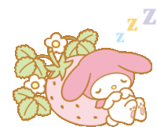

Quantidade dormida: {{ quantidade_comida }}
Você é uma pessoa que gosta bastante de dormir (pelo menos eu acho). Esse "jogo" é basicamente um simulador de dormir (é, não tenho muita criatividade). Além disso, há um contador de dormidas (que reseta toda vez que vc sai do site, então não serve para contar quantas vezes vc dormiu na vida real).